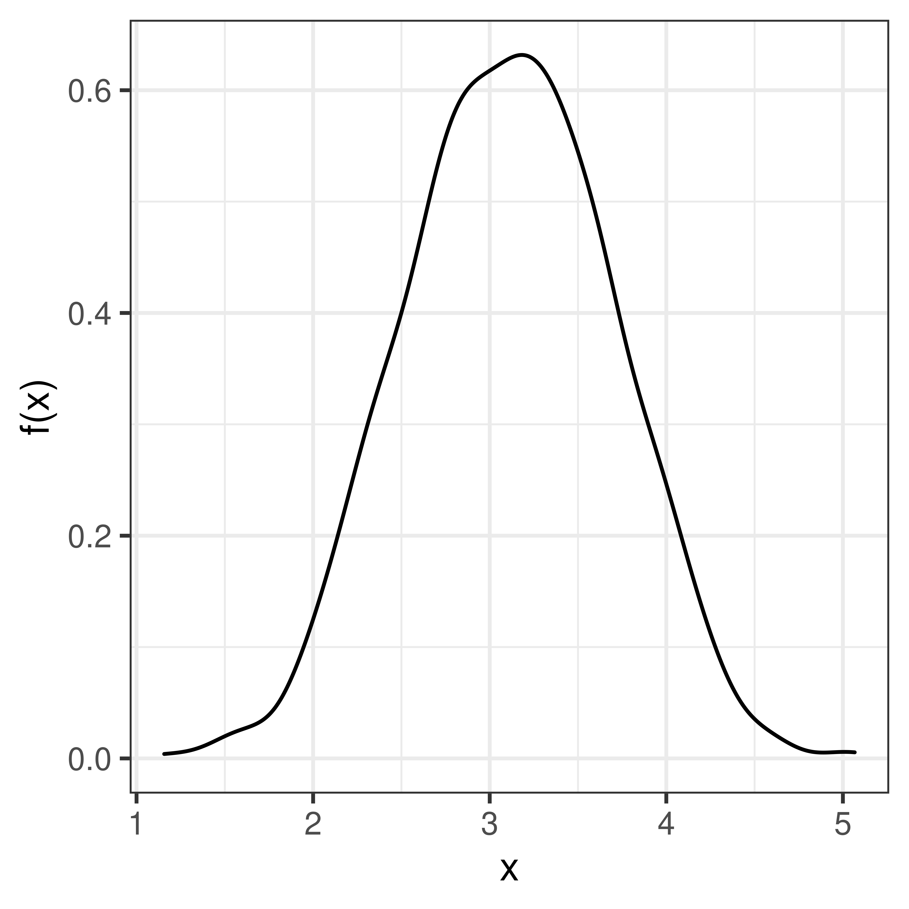
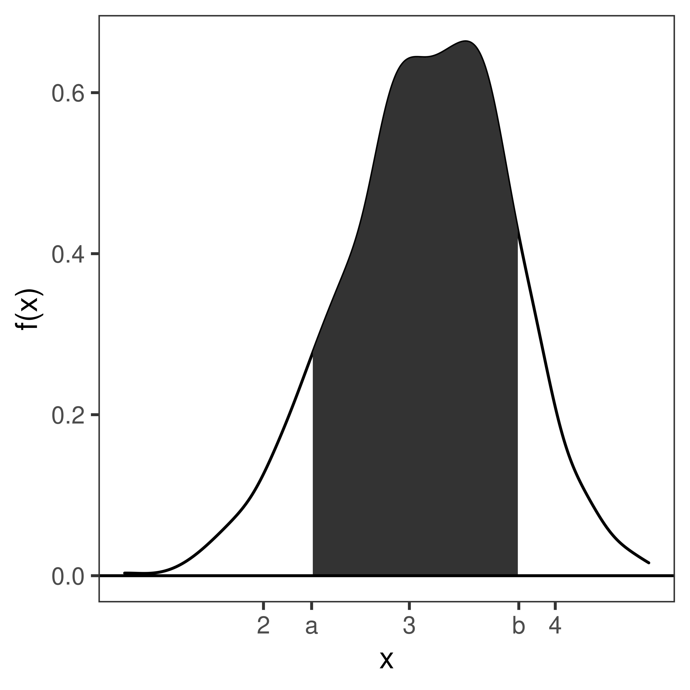
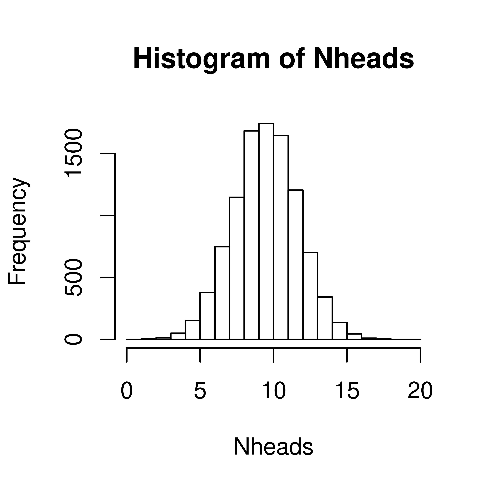

Chapter 1 Probability theory
Learning outcomes
- understand the concept of random variables and probability
- understand and learn to use resampling to compute probabilities
1.1 Random variables
The outcome of a random experiment can be described by a random variable.
Whenever chance is involved in the outcome of an experiment the outcome is a random variable.
A random variable can not be predicted exactly, but the probability of all possible outcomes can be described.
A random variable is usually denoted by a capital letter, \(X, Y, Z, \dots\). Values collected in an experiment are observations of the random variable, usually denoted by lowercase letters \(x, y, z, \dots\).
The population is the collection of all possible observations of the random variable. Note, the population is not always countable.
A sample is a subset of the population.
Example random variables:
- The weight of a random newborn baby
- The smoking status of a random mother
- The hemoglobin concentration in blood
- The number of mutations in a gene
- BMI of a random man
- Weight status of a random man (underweight, normal weight, overweight, obese)
- The result of throwing a die
1.1.1 Discrete random variables
A discrete random number has countable number of outcomes values, such as {1,2,3,4,5,6}; {red, blue, green}; {tiny, small, average, large, huge} or all integers.
A discrete random variable can be described by its probability mass function, pmf.
The probability that the random variable, \(X\), takes the value \(x\) is denoted \(P(X=x) = p(x)\). Note that:
- \(0 \leq p(x) \leq 1\), a probability is always between 0 and 1.
- \(\sum p(x) = 1\), the sum over all possible outcomes is 1.
Example 1 The number of dots on a die
When rolling a die the there are six possible outcomes; 1, 2, 3, 4, 5 and 6, each of which have the same probability, if the die is fair. The outcome of one dice roll can be described by a random variable \(X\). The probability of a particular outcome \(x\) is denoted \(P(X=x)\) or \(p(x)\).
The probability mass function of a fair six-sided die can be summarized in a table;
| x | 1.00 | 2.00 | 3.00 | 4.00 | 5.00 | 6.00 |
| p(x) | 0.17 | 0.17 | 0.17 | 0.17 | 0.17 | 0.17 |
or in a barplot;

Figure 1.1: Probability mass function of a die.
Example 2. The smoking status of a random mother
The random variable has two possible outcomes; non-smoker (0) and smoker (1). The probability of a random mother being a smoker is 0.39.
| non-smoker | smoker | |
|---|---|---|
| x | 0 | 1 |
| p(x) | 0.61 | 0.39 |
Example 3 The number of bacterial colonies on a plate

Figure 1.2: Probability mass distribution of the number of bacterial colonies on an agar plate.
Exercise
Urnexempel, räkna sannolikhet?
1.1.2 Continuous random variable
A continuous random number is not limited to discrete values, but any continuous number within one or several ranges is possible.
Examples: weight, height, speed, intensity, …
A continuous random variable can be described by its probability density function, pdf.
Figure 1.3: Probability density function of the weight of a newborn baby.
The probability density function, \(f(x)\), is defined such that the total area under the curve is 1.
\[ \int_{-\infty}^{\infty} f(x) dx = 1 \]

The area under the curve from a to b is the probability that the random variable \(X\) takes a value between a and b.
\(P(a \leq X \leq b) = \int_a^b f(x) dx\)
The cumulative distribution function, cdf, sometimes called just the distribution function, \(F(x)\), is defined as:
\[F(x) = P(X<x) = \int_{-\infty}^x f(x) dx\]


\[P(X<x) = F(x)\]
As we know that the total probability (over all x) is 1, we can conclude that
\[P(X \geq x) = 1 - F(x)\] and thus
\[P(a \leq X < b) = F(b) - F(a)\]
1.2 Simulate distributions
As seen in previous chapter, once the distribution is known, we can compute probabilities, such as \(P(X=x), P(X<x)\) and \(P(X \geq x)\). If the distribution is not known, simulation might be the solution.
Figure 1.4: A coin toss. Urn model with one black ball (heads) and one white ball (tails).
A single coin toss can be modelled by an urn with two balls. When a ball is drawn randomly from the urn, the probability to get the black ball (heads) is \(P(X=H) = 0.5\).
If we want to simulate tossing 20 coins (or one coin 220 times) we can use the same urn model, if the ball is replaced after each draw.
In R we can simulate random draws from an urn model using the function sample.
## [1] "H"## [1] "T"Every time you run the sample a new coin toss is simulated.
The argument size tells the function how many balls we want to draw from the urn. To draw 20 balls from the urn, set size=20, remember to replace the ball after each draw!
## [1] "T" "T" "T" "H" "H" "H" "T" "H" "T" "T" "H" "H" "H" "T" "T" "T" "H" "H" "H"
## [20] "H"How many heads did we get in the 20 random draws?
## [1] 11We can repeat this experiment (toss 20 coins and count the number of heads) several times to eastimate the distribution of number of heads in 20 coin tosses.
To do the same thing several times we use the function replicate.
Nheads <- replicate(1000, {
coins <- sample(c("H", "T"), size=20, replace=TRUE)
sum(coins == "H")
})Plot distribution of the number of heads in a histogram.

Now, let’s get back to the question; when tossing 20 coins, what is the probability of at least 15 heads?
\(P(X \geq 15)\)
Count how many times out of our 1000 exeriments the number is 15 or greater
## [1] 20From this we conclude that
\(P(X \geq 15) =\) 0.02
Exercise 1.1 In a single coin toss the probabity of heads is 0.5.
In 20 coin tosses,
- what is the probability of exactly 15 heads?
- what is the probability of less than 7 heads?
- What is the most probable number of heads?
- what is the probability of 5 tails or less?
- what is the probability of 2 heads or less?
1.3 Parametric discrete distributions
1.3.1 Bernoulli trial
A Bernoulli trial is a random experiment with two outcomes; success and failure. The probability of success, \(P(success) = p\), is constant. The probability of failure is \(P(failure) = 1-p\).
When coding it is convenient to code success as 1 and failure as 0.
The outcome of a Bernoulli trial is a discrete random variable, \(X\).
| x | 0 | 1 |
| p(x) | 1-p | p |
1.3.2 Binomial distribution
Also the number of successes in a series of independent and identical Bernoulli trials is a discrete random variable.
\(Y = \sum_{i=0}^n X_i\)
The probability mass function of \(Y\) is called the binomial distribution.
1.3.3 Hypergeometric distribution
1.3.4 Poisson distribution
** Exercise: Dice experiment **
Kankse använda detta som ett illustrativt exempel iställer för som en övning? *
When throwing 10 dice, how many dice show 6 dots?
- Define the random variable of interest
What are the possible outcomes?
- Which is the most likely number of sixes?
- What is the probability to get exactly 2 sixes when throwing ten dice?
- On average how many sixes do you get when throwing ten dice?
- What is the probability to get 4 or more sixes when throwing ten dice?
- Estimate the probability mass function
** Exercises **
- When throwing a fair die, what is the probability
- to get 4?
- 5 or more?
- an odd number?
- When throwing two dice, what is the probabilty of first getting 2 and then 3 or more?
- When throwing 20 fair dice, what is the probabaility
- to get 6 exactly 5 times?
- to get 6 5 or more times?
When the entire population is known, probabilities can be computed by counting the fraction of observations that fulfil the criteria of interest.
1.4 Conditional probability
P(X 3.5 | S = 1)
1.4.1 Diagnostic tests - passar bättre i samband med klassificering?
| pos | neg | tot | |
|---|---|---|---|
| not cancer | 98 | 882 | 980 |
| cancer | 16 | 4 | 20 |
| total | 114 | 886 | 1000 |
- What is the probability of a positive test result from a person with cancer?
- What is the probability of a negative test result from a person without cancer?
- If the test is positive, what is the probability of having cancer?
- If the test is negative, what is the probability of not having cancer?
- Connect the four computed probabilities with the following four tems;
- Sensitivity
- Specificity
- Positive predictive value (PPV)
- Negative predictive value (NPV)
Discuss in your group!